The talk I gave, chapter by chapter:
I'll answer all four before the end — including the one I still haven't built.
src/Nine people wrote it. Most of the volume is two of us — but the parts you are most likely to care about today came from outside Blue Robotics.
Native TCP/UDP MAVLink — the feature that makes Cockpit useful to this room — was contributed by @amir-hossein-zarei in PR #2084. Not by us.
So most of you filed Cockpit under "nice, but not for me" — and you were right to.
A Pixhawk, a telemetry link, and Cockpit.
Caveat, said out loud: raw sockets, serial and USB GNSS are Standalone (desktop) only. Browsers can't open those outside a secure context. The browser build still does WebSocket and WebRTC.
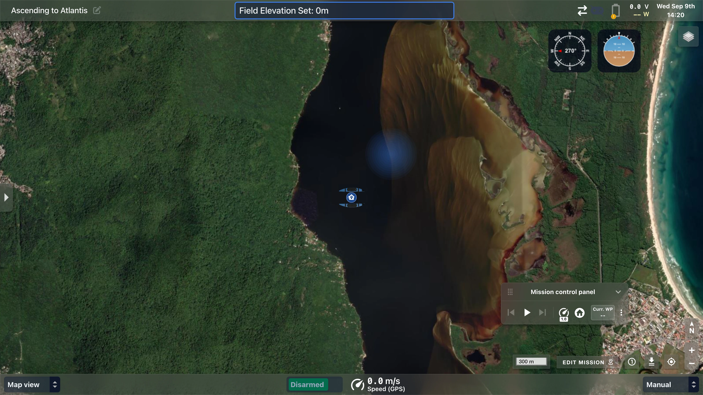
name=value. No code inside Cockpit at all.All five reach the same place. Let me show you that place first.
One bus. Everything on it. Every door leads here.
A flat, observable key–value store. Telemetry, internal state, your data — no distinction.
Once a value is in there, every consumer already works: plotters, indicators, gauges, telemetry overlays, CSV logs, joystick bindings, action triggers.
You do not write display code. You put a number in the lake and bind a widget to it.
window.cockpit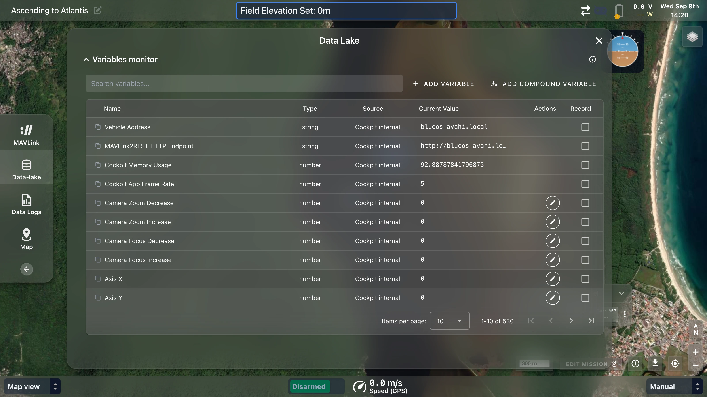
| Source | Id format |
|---|---|
| MAVLink field | /mavlink/{sys}/{comp}/ATTITUDE/roll |
| Named value | /mavlink/{sys}/{comp}/NAMED_VALUE_FLOAT/{name} |
| Generic WebSocket | external/{machinized-name} |
| USB GNSS | external/positioning/gnss/{device}/{field} |
| Point of interest | cockpit/pois/{id}/latitude |
| Joystick axis | inputs/mavlink/axis-x |
| Built-in | vehicle-address |
There is no enforced namespace. To expose a new MAVLink field, extend the
flattener in src/libs/vehicle/common/data-flattener.ts — never special-case a widget.
window.cockpitwindow.cockpit.getDataLakeVariableData(id)
window.cockpit.setDataLakeVariableData(id, value)
window.cockpit.listenDataLakeVariable(id, cb)
window.cockpit.unlistenDataLakeVariable(id, lid)
window.cockpit.createDataLakeVariable({ id, name, type })
window.cockpit.getAllDataLakeVariablesInfo()window.cockpit.availableCockpitActions
window.cockpit.registerNewAction(action)
window.cockpit.registerActionCallback(a, cb)
window.cockpit.executeActionCallback(id)
window.cockpit.deleteAction(id)Global, no import. Defined in src/libs/cosmos.ts.
// depth from pressure, live
({{ external/pressure }} - 101325)
/ (1025 * 9.80665)The result becomes a real data-lake variable — plottable, recordable, bindable to a joystick, usable as an action trigger.
User-created variables can survive reboots — the definition, the value, or both.
persistent keeps the variable;
persistValue keeps its last value.
Zero code inside Cockpit. Four lines outside it.
variableName=valueStatus="12"external/ + a machinized name.WaterTemp=23.5 → external/watertemp, typed number.
import asyncio, websockets
async def handler(ws):
while True:
await ws.send("WaterTemp=23.5")
await asyncio.sleep(1)
async def main():
async with websockets.serve(handler, "0.0.0.0", 8765):
await asyncio.Future()
asyncio.run(main())Settings → General → Generic WebSocket connections → paste
ws://localhost:8765
The URL accepts data-lake variables, so
ws://{{ vehicle-address }}:8765 follows the vehicle you're connected to.
Auto-reconnects every 2 s. Survives restarts on both ends.
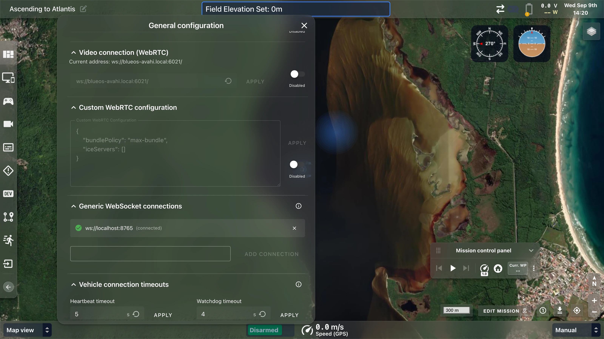
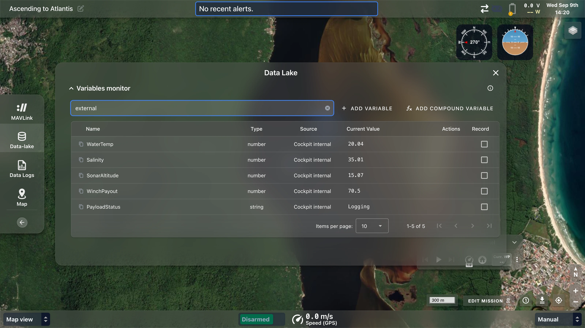
PayloadStatus is text because the sender quoted itfeed.py — 4 lines, visible on screenws://localhost:8765 into Cockpitexternal → values tickingGetting data in is half of it. Now make something happen.
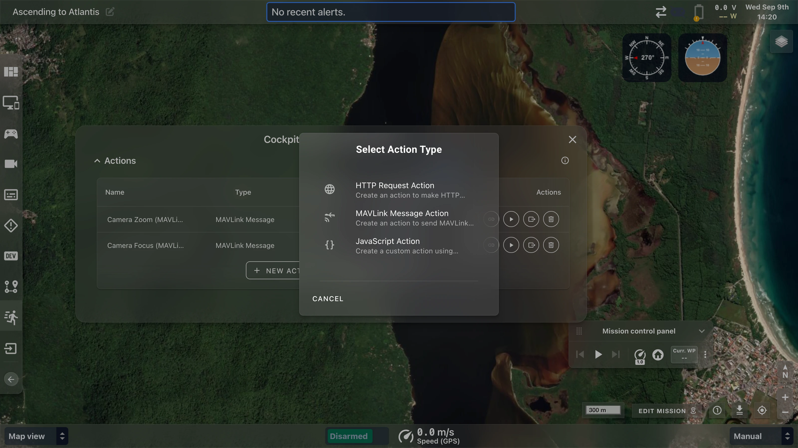
{
"vehicle": "{{ vehicle-address }}",
"temp_c": {{ external/watertemp }},
"alt_m": {{ external/sonaraltitude }},
"depth": {{ /mavlink/1/1/VFR_HUD/alt }}
}Same {{ }} syntax in the URL, in query
parameters, and in MAVLink message fields.
Gotcha: the URL, query params and body are interpolated. Headers are not. If you need a dynamic token in a header today, you need a JavaScript action.
Compose any MAVLink message, fill fields from the lake, send it. No firmware knowledge of Cockpit required.
minIntervalWorked example. external/watertemp crosses a threshold → a compound variable goes
true → an action link fires an HTTP request to your service → your winch pays out. Nothing compiled, nothing
forked, and it survives a Cockpit update.
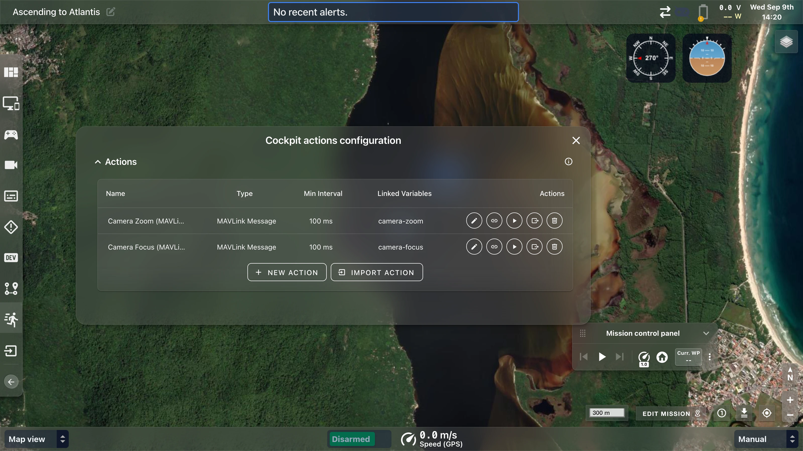
When you need pixels, not just values.
const el = document.getElementById('temp')
window.cockpit.listenDataLakeVariable(
'external/watertemp',
(v) => { el.textContent = v.toFixed(1) + ' °C' }
)Three panes — HTML, CSS, JS — in a Monaco editor, with autocomplete over variable ids and live values in the hover tooltips.
One toggle and your widget picks up Cockpit's glass styling, so it doesn't look bolted on.
Not sandboxed. Your JavaScript is appended to Cockpit's own document and runs with the same privileges as the app. Powerful, and a real trade-off — treat shared DIY widgets like you'd treat any script you paste into a console.
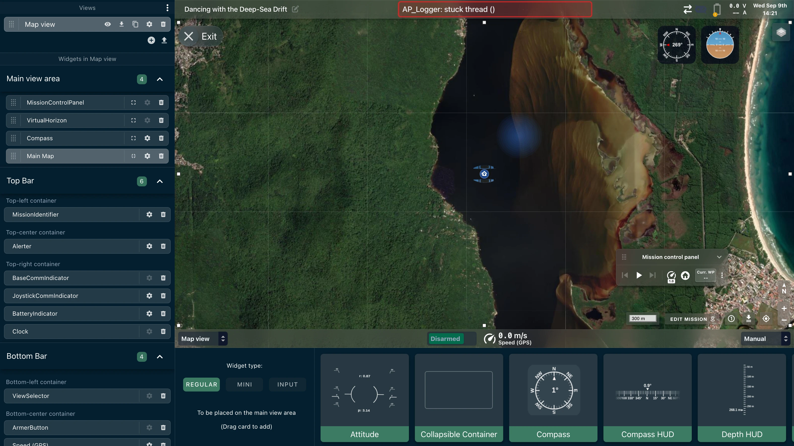
You already have a web app. Bring it.
CockpitAPI.listenToDatalakeVariable(
'external/watertemp',
(value) => render(value),
10 // max Hz
)Ships as a browser bundle:
yarn build:lib → cockpit-external-api.browser.js
// child → Cockpit
{ type: 'cockpit:listenToDatalakeVariables',
variable: 'external/watertemp', maxRateHz: 10 }
// Cockpit → child
{ type: 'cockpit:datalakeVariable',
variable: 'external/watertemp', value: 23.5 }Honest limitation: the bridge is listen-only. A child page can read telemetry but has no documented way to write back into the lake. If you need to write, use door 1 or door 3.
useVehicleAddressAsBase — your URL resolves against the connected vehicle
No hardcoded IPs, and it follows the operator when they switch vehiclescontentZoom and scaleContentWithWidget
Your page stays legible when the operator resizes the widgetcollapsibleContainerName and startCollapsed
Dock the widget into a collapsible drawer instead of eating canvasShip the whole experience, not just a page.
Cockpit asks BlueOS what services are running. Any service that declares
extras.cockpit in its metadata gets fetched at whatever relative path it names.
There is no fixed endpoint like /cockpit-widgets.
You choose the path; Cockpit follows it.
{
"targetSystem": "cockpit",
"targetCockpitApiVersion": "1.0.0",
"widgets": [
{ "name": "Sonar Payload",
"iframeUrl": "/ui/panel.html",
"iconUrl": "/ui/icon.svg",
"useExtensionPathAsBaseUrl": true,
"collapsibleContainerName": "Payload" }
],
"actions": [
{ "id": "payload-ping", "name": "Ping payload", "type": "http-request",
"config": { "url": "http://{{ vehicle-address }}:9000/ping", "method": "POST" } }
],
"joystickSuggestions": [ /* ... */ ]
}{
"id": "sonar-payload-map",
"name": "Sonar payload controls",
"targetVehicleTypes": ["sub", "rover"],
"buttonMappingSuggestions": [
{ "actionProtocol": "cockpit-action",
"actionId": "payload-ping",
"actionName": "Ping payload",
"button": 3,
"modifierKey": "shift" }
]
}Ship a payload, and ship the controls for it — so the operator doesn't have to read your manual to find out that shift+Y pings the sonar.
It's a suggestion. The operator sees a review dialog and accepts or ignores it. You cannot silently rebind someone's controller.
Keys may be snake_case — the schema normalises them.
Every suggested widget, action and mapping goes through a review dialog. The operator accepts, ignores, or restores it later.
This is why an operator can install your extension the morning of a dive without reading the source.
| Door | Use it when | Cost |
|---|---|---|
| 1 · WebSocket | You have values and want them seen, plotted, logged | minutes |
| 2 · Actions | You need Cockpit to call you, or the vehicle to react | an afternoon |
| 3 · DIY widget | You need a custom display and don't want to host anything | an afternoon |
| 4 · iframe | You already have a web UI worth keeping | an hour, plus your app |
| 5 · Manifest | You ship a product and want it to configure itself | half a day |
Most people reach for door 5 when door 1 would have done. Don't.
The things I'd rather you heard from me than found at 2am.
targetCockpitApiVersion isn't enforced
It's parsed, then nothing gates on itEvery one of these is small, well-scoped, and genuinely useful. If you want a way in, this is the list.
Blue Robotics builds submarines and boats. We test ArduSub and ArduRover every single day, against real hardware.
Straight from our own README: aerial support is initial. ArduCopter has been physically tested, but the core team doesn't fly regularly — "use it at your own risk."
That is not false modesty. It's a gap, and it's the gap that matters most to this room.
PRs from outside this team already shipped TCP/UDP, bitfields and the EKF widget. It works.
| You asked | Today |
|---|---|
| Handling lost connections | Hardened reconnection, persistent disconnect warnings, a recording health monitor, and vehicle discovery that scans VPN/SD-WAN interfaces |
| Remote vehicle access | Works over any routable link, plus BlueOS Cloud login in v1.19 |
| Which map library | Still Leaflet — but now behind composables, with offline tiles, custom providers and GeoTiff overlays |
| 3D maps and visualisation | Still not built. Still want it. Not promising a date. |
Which means the same five doors that feed live telemetry also feed the recording. Your payload data replays alongside the vehicle's.
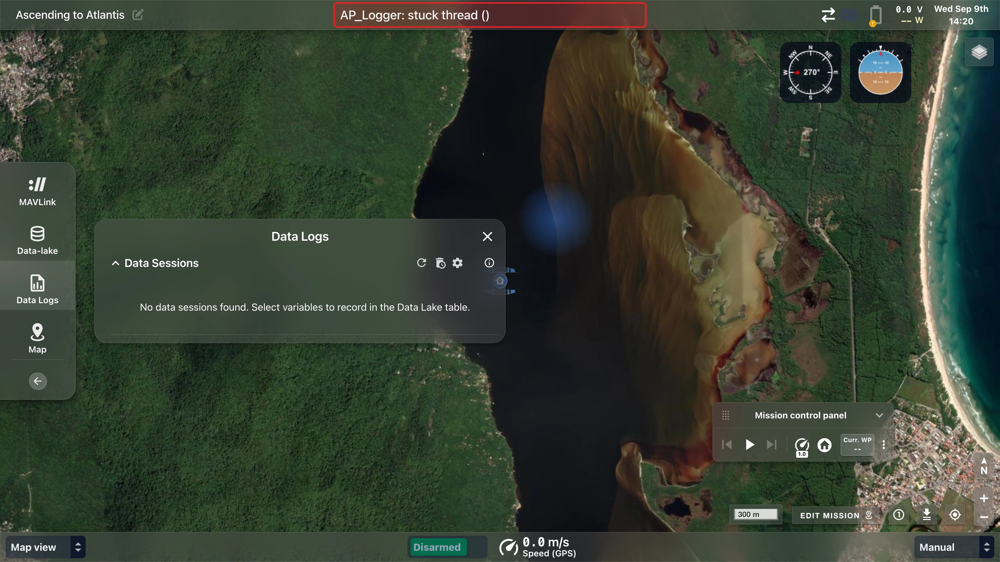
On Discord. Open. If you want to own aerial support, that's the fastest way to start — turn up and say so.
Try it with nothing installed: there's a browser demo with no vehicle attached, and the five doors all work against it.
And if you fly copters or planes — please come and find me.
Rafael Lehmkuhl · Blue Robotics · github.com/bluerobotics/cockpit
Not part of the 40 minutes. Jump here from the overview (press O) if a question needs it.
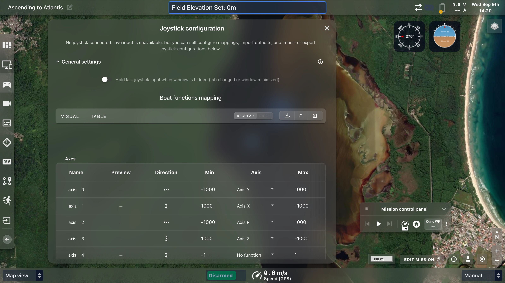
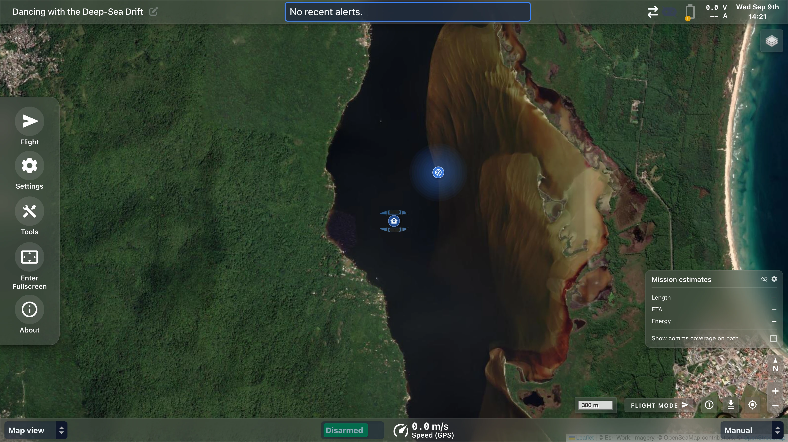
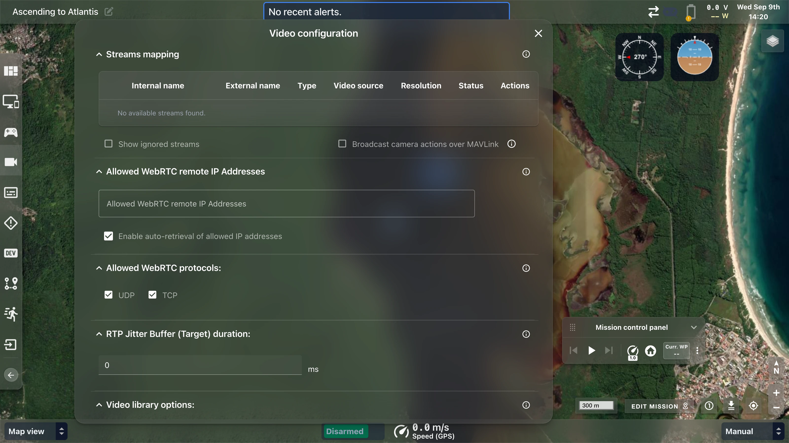
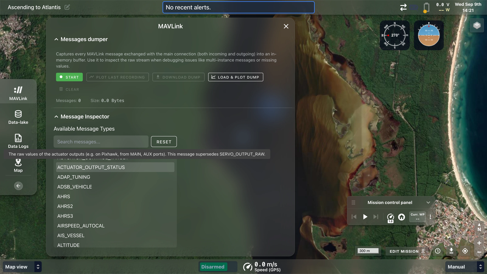
A modal on every startup, asking which copy of every changed setting to keep. The most-hated feature we shipped.
Every write carries a timestamp. Newest wins. Automatic, scoped per user and per vehicle. No modal.
Settings follow the operator between topside machines — which is what the feature was always for, minus the interrogation.